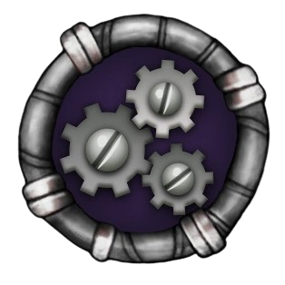
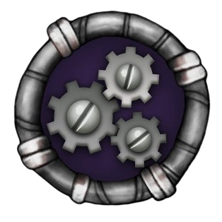

The Ethereal Class can be split into two groups. Single and Double Element Ethereals are Stable Ethereals that can be bred and are found on Ethereal Island. Triple, Quad, and Quint Element Ethereals are Unstable Ethereals that are unbreedable, and must be synthesized and be found on Ethereal Workshop.
There are five Ethereal Elements:
Plasma
Shadow
Mech

Crystal
Poison

“If Ethereal Island seems otherworldly to you, you're spot on. Located in a Pocket Dimension of the multiverse, it is home to Monsters unlike any that have been seen or heard before. Oozing with mysterious substances and orbited by objects of ominous origin, you won't be able to resist the sublime wonder of its song!”
Plasma
Shadow
Mech
Crystal
Poison
Ethereal Island is an Island in My Singing Monsters that is primarily and almost fully inhabited by all Single and Double Element Ethereal Monsters.
Ethereal Island is accessible at Level 4 without any purchase and was first released on September 4th, 2013. However, Monsters do not unlock on Ethereal Island until Level 9.
Ethereal Island can hold the Single Element Ethereal Monsters found on the Natural Islands after they are fed to level 15 and Teleported. Teleporting will reset their levels back to one on Ethereal Island, and turn the Monsters into eggs again. Teleportation is impossible to reverse, so the Monsters will stay permanently on Ethereal Island.
Singles & Doubles
Singles
Ghazt
“ The extraordinary Ghazt only manifests itself when conditions are absolutely perfect. Imbued with the Ethereal power of Plasma, its sleek frame and ability to become intangible are ideal for slipping in and out of places unnoticed. However, these traits also make it vulnerable to accidental interdimensional travel. It plays well with the other Monsters, but just like a cat, it sometimes prefers to be alone... or in the company of others of its kind. ”
- Monster Bio
Ghazt Plant Island
Ghazt Ethereal Island
Element(s)
Element(s)
Grumpyre
“ Another of the mysterious Ethereals, you can never fully tell what kind of mood the Grumpyre is in. Thanks to its shifting eyes and mouth as it gurgles forth its song, it might appear sad when really it's happy, or afraid when it's actually having a blast. This makes sense, since it embodies the essence of Shadow - always a bit obscured, and able to unnerve even the most intrepid of Monsters. ”
- Monster Bio
Grumpyre Cold Island
Grumpyre Ethereal Island
Reebro
“ Of all the creatures known in the multiverse, the Reebro is right up there with the strangest. Little more than an oversized brain to begin with, this Ethereal beast develops a mechanical body using its instinctual technological know-how. The Reebro, or simply 'Bro' as it is affectionately called by its fellow Monsters, is a laid-back character who lives for fun and has the scoop on all the latest trends. It's always willing to assist others with their 'Mech'-nical difficulties - even if its go-to solution is to 'turn it off and then turn it on again. ”
- Monster Bio
Reebro Air Island
Reebro Ethereal Island
Element(s)
Element(s)
Jeeode
“ The wise Jeeode is renowned for its ability to see all sides of a situation. Harnessing the Ethereal power of Crystal, it pictures each scenario as sitting in the center of a giant prism, looking at each facet one at a time. Then, it somehow creates a solution that leaves everyone smiling. Because of this refined perspective, Jeeodes are first-rate instrumentalists, never missing a note. ”
- Monster Bio
Jeeode Water Island
Jeeode Ethereal Island
Humbug
“ The Humbug is the incarnation of the misunderstood Ethereal element of Poison. When it buzzes its wings fast enough, it can open up and glide on supersonic dimensional highways from universe to universe. Humbugs naturally enjoy warm weather, and are drawn to humid places where the hum produced by their wings has the finest tone. ”
- Monster Bio
Humbug Earth Island
Humbug Ethereal Island
Element(s)
Doubles
Element(s)
Whisp
“ Even though it may look like the Whisp doesn't get out too often, nothing could be further from the truth. It loves to swoop, glide and careen through the phantasmagorical terrain of Ethereal Island, entertaining other Monsters with its mellifluous voice and charming conversational skills. Whisps don't cast reflections in mirrors, which makes it difficult to preen their stylish hairdos. ”
- Monster Bio
Whisp Ethereal Island
Nebulob
“ The little-understood Nebulob is one of the few Monsters born without a predisposition to music. Instead, it is something that the Nebulob works on all its life, constantly researching new and exciting genres to learn from and experiment with. The elaborate exo-suit it dons aids in the creation of its own special style, a dulcet mix of machine and spirit. If pressed, the Nebulob will confess its favorite musical genre as 'Rhythm & Ooze.' ”
- Monster Bio
Nebulob Ethereal Island
Element(s)
Element(s)
Sox
“ According to monster lore, the ancestors of the Sox were self-conscious of the gaping holes in their tails. Over time, it was discovered that eating precious stones spurred the growth of peculiar metal pads over the holes. Quite by accident, Soxes learned they could use them, along with their tube-like snouts, to create smooth musical riffs! The age-old mystery of 'What does the Sox say' has now been solved. ”
- Monster Bio
Sox Ethereal Island
Jellbilly
“ This rootin'-tootin' Ethereal is something of a legend to the scavenging Cybops of the neighboring dimension. Their cycloptic vision and distinctive vocal twang are modeled after the Jellbilly's own. Even though they may never meet face-to-face, Jellbillies generously return every piece of Cybop fan mail they receive, taking advantage of their many tentacles to write several replies at once. ”
- Monster Bio
Jellbilly Ethereal Island
Element(s)
Element(s)
Arackulele
“ Multi-limbed and multi-talented, the Ethereal Monster known as the Arackulele experiences no greater joy than when it's plucking and strumming on its homemade chordophone. Its rousing and inspirational musical stylings are emblematic of its whole attitude towards life: even though we are all just specks in the vastness of the multiverse, when enough Monsters join together in harmony, anything is possible! ”
- Monster Bio
Arackulele Ethereal Island
Boodoo
“ Offspring of Shadow and Crystal, Boodoos are contradictory creatures. Its uncanny appearance belies a gentle soul who enjoys home-cooking, collecting vintage dolls and artisanal craft-making. A Boodoo's shakers and ornamental headdress represent only a small portion of its creative pursuits; Monsters far and wide will travel to witness the unveiling of a Boodoo original. ”
- Monster Bio
Boodoo Ethereal Island
Element(s)
Element(s)
Kazilleon
“ Kazilleons aren't the greatest-smelling Monsters. For one, the toxic gas they spew when they're singing has been known to singe fur and upset appetites. To boot, the noxious fumes emanating from their color-shifting skin is sometimes harvested to help strip paint off of old buildings. The thing is, they're so friendly, everyone wants them around anyhow. ”
- Monster Bio
Kazilleon Ethereal Island
Bellowfish
“ Indigenous to the aquaslime pools of Ethereal Island, this blubberous beast always wants to be smack dab in the middle of the action. So that they never miss out on that action, Bellowfish cooperate to create each other's crystal-powered mechanized suits, which let them leave the water and join in the musical menagerie. That said, they're not particularly known for their punctuality; if there's a latecomer to a monster party, it's safe to assume a Bellowfish is the one who knocks. ”
- Monster Bio
Bellowfish Ethereal Island
Element(s)
Element(s)
Dragong
“ The Dragong's lithe body belies incredible strength and resilience, which it uses to absorb the vibration of its tail- and feet-plates. In addition to the cymballike clashing they create, these plates allow the Dragong to skim the water's surface, and unsurprisingly, to prepare delicious dishes for its Ethereal cohorts. ”
- Monster Bio
Dragong Ethereal Island
Fung Pray
“ The chimeric Fung Pray strives to achieve complete balance in all aspects of life, according to transcendental teachings passed down from generation to generation. Even though tranquility and precision are held in highest esteem, the occasional burst of unbridled exuberance is permitted. Bystanders can identify such a display by the appearance of glowing gills under the Fung Pray's headcap. ”
- Monster Bio
Fung Pray Ethereal Island
Element(s)
Trailer
“So this is how the other half lives… literally! For all of recorded Monster history, the Ethereal class has been confined to Single- and Double-Elementals… until the establishment of the Workshop. Located inside Ethereal Island and doubling as the 'brain' of the Colossal Zarroë, it's actually superimposed on the abandoned ruins of another entity's laboratory. Here, Zarroë has achieved the impossible and brought to life Triple-Element Ethereals (and beyond) using the unpredictably powerful Meebs and strange new Structures of its own invention. The Colossal's goal? To create a symphony of synthetic sounds worthy of the name Workshop!”
Ethereal Workshop is an Island in My Singing Monsters that is home to the Meeb critters, Triple-Element, Quad-Element, and the Quint-Element Ethereals. It appears to be located inside the head of the Ethereal Island Colossal, and uses new mechanics that require the use of the Mirror Islands and strange creatures called Meebs. The Island was added in Version 4.1.0, on Wednesday, October 11th, 2023.
Meebs
Each player starts off with 10 'neutral' Meebs, which can then be attuned to one of five Ethereal elements using the Attunement Structure by selecting the Ethereal element's respective Mirror Natural Island. The amount of time it takes for a Meeb to attune changes through the five Mirror Natural Islands each day, with one Island being 5 hours, the previous and next Island being 10 hours, and the two remaining ones being 20 hours. Several Meebs can then be put into the Synthesizer to create a Triple-Element Ethereal, using a combination of Meebs attuned to the Ethereal elements that the respective Ethereal Monster has.
Stability
Different Attuned Meebs have different stabilities when placed inside the Synthesizer. The elements scale in their instability in order of their appearances on the Natural Islands (for example, a Plasma Meeb adds the least instability to the Synthesizer, as it is on the first Natural Island. Alternatively, a Poison Meeb adds the most instability, for it is present on the last Natural Island). They are all from the selection of Meebs you put into the Synthesizer.
If the combination of Meebs reaches the end of the chart, there will be a sign with an exclamation mark and a loud whistling noise will play.
The Synthesizer features a chart with a gauge showing the level of instability for combinations of Attuned Meebs. The closer the gauge is to the green side, the more stable the Monster combination will be. The closer it is to the red side, the more unstable it will be. The more unstable a combo gets, the higher the chance of it failing. The meeb instability goes as follows: Plasma (Plasma Element) has an instability of 1, Shadow (Shadow Element) has an instability of 2, Mech (Mech Element) has an instability of 3, Crystal (Crystal Element) has an instability of 4, and Poison (Poison Element) has an instability of 5.
The stability of a combination depends on the multiplicity of the combination of the elements of the meebs. For example, the combination of Plasma, Shadow, and Mech (1 x 2 x 3 = 6) has the same stability as Shadow and Mech on their own (2 x 3 = 6). At the moment, the Synthesizer can handle a maximum stability of 120.
Full Song
Triples & Quads
Triples
Element(s)
Yooreek
“ Yooreek… uh… what's the story behind this Monster? It seems to possess an organic exterior, but the sound it produces definitely evokes something more robotic. Perhaps this trait is 'inherited' from auditory residue from former residents of the Workshop. This Ethereal and Gaddzooks appear to have a lot of genetic programming in common, but the quirks of the attunement and synthesis processes have resulted in markedly different final products. It matters little to these two, who savor each other's company and really 'click' musically. ”
- Monster Bio
Yooreek Ethereal Workshop
Meebkin
“ The Meebkin gets its name from a greater-than-average affinity for the Meeb critters essential to the specialized processes of the Workshop. Rather than being recruited for attunement, a pair is carefully chosen to perch on either end of a special baton made of woven fibers. Deftly and gymnastically twirling the baton over its head, the Meebkin is able to coax otherworldly groans and gargles out of the mouths of Meebs, but don't worry - the critters aren't uncomfortable. Rather the opposite: the Triple-Element Ethereal is a doting and responsible caretaker. ”
- Monster Bio
Meebkin Ethereal Workshop
Element(s)
Element(s)
Blarret
“ Right after it's synthesized, the Ethereal Blarret only has one functioning mouth: the top one attached to the rest of its face. Once it's a little older, the Monster's secondary and tertiary mouths learn to sing with preternatural speed… although a non-trivial amount of discipline and concentration is required to make sure they all sing in the right order. After a while though, the reflex becomes 'otama-tic.' Blarrets love getting their triple chins scratched by an Auglur's digital claws - although in the case of the two lower mouths, it's more like a neck scratch? ”
- Monster Bio
Blarret Ethereal Workshop
Gaddzooks
“ The instability present in all Triple-Element Ethereals is no better represented than in the Gaddzooks. Every snap of their jaws and tap of their feet threatens to shatter its very form, and yet this Monster is able to keep it together and perform. An outlier in the Monster World as far as double-headedness goes, both of the Gaddzook brainstems get along famously and are always totally in sync with one another (we suppose you'd have to be in order to attain that level of percussive prowess). This cheerfulness and amicability extends to friendships with its fellow Ethereals as well, particularly the closely-related Yooreek. ”
- Monster Bio
Gaddzooks Ethereal Workshop
Element(s)
Element(s)
Auglur
“ The Auglur leans heavily into its Mech-Element parentage, and blurs the line between the real and virtual worlds by manifesting a trio of hands with digital digits. You don't need augmented reality goggles to see them; the Auglur's power makes them visible to all. From there, it's a simple matter of gesturing and swiping in mid-air at 'sonic panels' that create soundscapes drawn from nostalgic dreams. Alright, maybe it's not actually so simple for you or I [sic] - but to the Auglur, it comes naturally… er, Ethereally. ”
- Monster Bio
Auglur Ethereal Workshop
Flasque
“ It's challenging to describe the Flasque as a 'living thing' by the conventional definition of the term. The Ethereal's body consists of little more than an assortment of beakers and chalices, which float and move together impossibly, defying all known scientific laws. If that wasn't already enough, the Monster purposefully collides these body parts together - isn't it fearful of breaking the glass? By a fluke of nature, the Flasque's green lifeblood that sloshes and splashes about inside its body parts actually fortifies them and makes them completely shatter-resistant. ”
- Monster Bio
Flasque Ethereal Workshop
Element(s)
Element(s)
Nitebear
“ Hello, hello? Hello! Behind the laughter and mirth of the majority of the Workshop's inhabitants lurks the Nitebear. A mishmash of multiple ideas, the leading theory is that it's secretly powered by quirky animatronics (hence the cables sticking out of its head). To avoid going purple in the face (and so that its servos don't lock up), the Monster must routinely express itself via a string of groans and moans. It's important for the Nitebear to socialize, even though its melancholic disposition often dampens the party atmosphere. The Ethereal asserts that it's going to stop killing the mood with the others and isolate itself... but it always comes back. ”
- Monster Bio
Nitebear Ethereal Workshop
Piplash
“ Wow! This Triple-Element Ethereal is… not what we were expecting. In a class of Monsters that includes some of the more unsightly species, the Piplash exists in stark and striking contrast. It's so cute and endearing! Even its headbanging, stereotypically associated with hardcore genres, is absolutely delightful. What precisely is going on here?! Is the Piplash harboring some secret, putting up a front, concealing a side we can't see? Could the Monster possibly be as wholesome as it outwardly seems? This is driving us crazy!!! ”
- Monster Bio
Piplash Ethereal Workshop
Element(s)

Element(s)
X'rt
“ Whenever Zarroë is struggling to articulate a thought, or the Colossal is having trouble remembering something, suspicion mounts that there's an X'rt about. Put bluntly (and literally), this is the Monster equivalent of a brain fart: its home is a gargantuan brain and it communicates by spewing gas from its... mouth? Gut? We're not sure how to classify it. The biggest surprise, especially because of the presence of the Poison Element, is that the X'rt's gaseous emissions are totally odorless. Instead, they buildup over time and incite confusion and fogginess in the thought processes of its neighbors - so make sure you're not planning on doing anything mentally taxing when an X'rt is nearby. ”
- Monster Bio
X'rt Ethereal Workshop
Teeter-Tauter
“ Teeter-Tauter is an unusually unstable pair, even when compared to its synthetic siblings who slink about the Workshop. Its chaotic Elemental power necessitated its split into two separate beings that together form one lovably lopsided Ethereal - made complete with some minor 'Mech-nical' enhancements! While the bipedal Teeter's acrobatic prowess is undeniable, its tireless tittering tends to teeter toward tedious in the eye of its more responsible half, Tauter. ”
- Monster Bio
Teeter-Tauter Ethereal Workshop
Element(s)
Quads

Element(s)
Whaill
“ Some Ethereals prefer to whisper, while others favor wailing. The Quad-Element Whaill is the latter, so-named for the ululations that gurgle forth from its many mouths. Although at first blush these sounds seem melodious, over time they can elicit feelings of dread and disorientation in the listener. That's because the sound waves the Whaill produces actually begin to tear apart the fabric of space time and threaten to expose reality to the Rift, the world between worlds. But how can the polystomatous Plasma Boss help it? When you have hands for mouths and mouths for hands, there's little else that you can do but wail. ”
- Monster Bio
Whaill Ethereal Workshop
Vhenshun
“ Behold… a workshop within the Workshop! Fittingly, the Mech Quad Vhenshun looks like the wooden workbench of Monster antiquity where items and decorations alike were crafted… if that workbench sprang to life and swapped crafting for clanging! Not only is this contraption itself a product of mechanical invention, it's an inventor in its own right! The Monster is constantly experimenting with the materials available to devise new gadgets and gizmos - not unlike the Celestial that shares its Elemental affiliation. Rumors swirl around that it's planning a hi-Mech heist to distract Zarroë and escape into the great beyond, but we're not sure the world is prepared for Vhenshun impact. ”
- Monster Bio
Vhenshun Ethereal Workshop
Element(s)
Element(s)
Pentumbra
“ Even though its official species name is recognized to be 'Pentumbra' (because of its five limbs and the shadow it casts), everyone just wants to call this Monster a 'Shady Long-Legs'. The Ethereal Quad's affinity for the Shadow Element causes an unusual sticky pink residue to form on its legs - something to do with the fact that they're so often bathed in darkness. Apparently this phenomenon has been known to happen at large scale, when the dark matter of the Rift between dimensions seeps out from interdimensional fractures. It could be a trick of light, but the gloom that dwells beneath a Pentumbra almost seems to take a life of its own... but because it's nothing more than a shadow of a shade, it tends to imitate other beings' sounds rather than create its own. ”
- Monster Bio
Pentumbra Ethereal Workshop
Rhysmuth
“ Rhysmuth's cubic configuration comes from its complex Crystalline composition. Each of its four Elements exerts incredible pressure against the others, compressing the very fiber of this Ethereal's being into compact blocks which vibrate with an atomic energy that can barely be contained. The most powerful of these blocks, the Rhubix Cube, is closely guarded within Rhysmuth's heart. A word to the wise: beware when excavating the Workshop's Mini-Mine, as this crafty Quad enjoys creeping among the minerals. ”
- Monster Bio
Rhysmuth Ethereal Workshop
Element(s)
Element(s)
Oogiddy
“ Look, we get it - Oogiddy doesn't exactly give everyone the warm fuzzies. But what if we told you that in the midst of its nauseating display, it is actually performing a crucial function to preserve the ecosystem of the Workshop? Oogiddy traps Poisonous gasses within it [sic] bulbous body, mixing them with its own uniquely fragrant blend of acidic juices to neutralize all toxicity. The goopy byproduct created through this process ain't pretty, but it acts as a highly effective fertilizer (or hair gel!). Oogiddy even bids its fellow Monsters to steer clear of noxious substances by aggressively pulsating its chromatophores in warning. ”
- Monster Bio
Oogiddy Ethereal Workshop
“ "It's alive!" Not since the creation of the Wubbox has Monsterkind witnessed such a significant scientific achievement. The gargantuan BeMeebEth represents the pinnacle of Zarroë's mad tinkering and endless experimentation. The Ethereal Quint towers over the other denizens of the Ethereal Workshop, inspiring awe and apprehension in equal measure. Visible in its unstable composition are all five Ethereal Elements: Plasmic tentacles, Shadowy claws, Crystalline cartilage, pockmarked Poisonous spines, and the Mech-nical jaw that houses its mighty brain. From the moment it erupted from the Synthesizer's upper bulb, there was no question that this Monster was the Top Boss of the Workshop. ”
BeMeebEth
Element(s)
BeMeebEth's Sounds